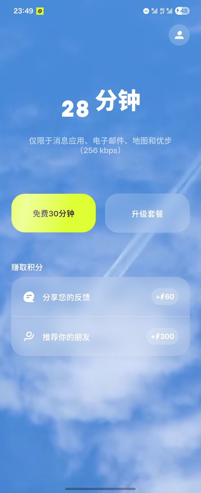

奶昔🥤
@realNyarime
@AotraWong 过期后还是能访问App和看广告的，当然也可以拿它的域名作为WS混淆，然而到300MB就给你掐信号了

Aotra | An Open Tunnel to Receive Answer
@AotraWong
非常低脂的esim，但是免费呀（
这个可以30min连接一次wifi以回血，适合于怕断网但是有不太需要网络的（好矛盾就是了）
可以看电子邮件&刷推就是了😊
使用Firsty发送 https://t.co/mR0DxNVWNb